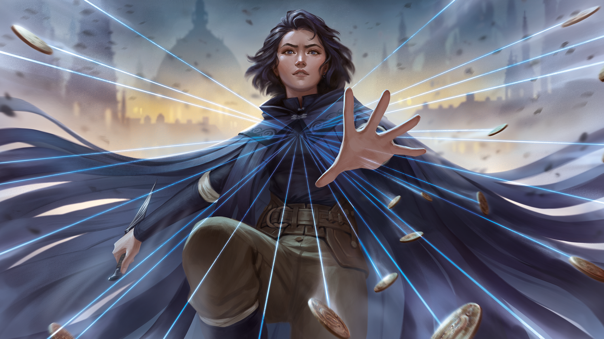
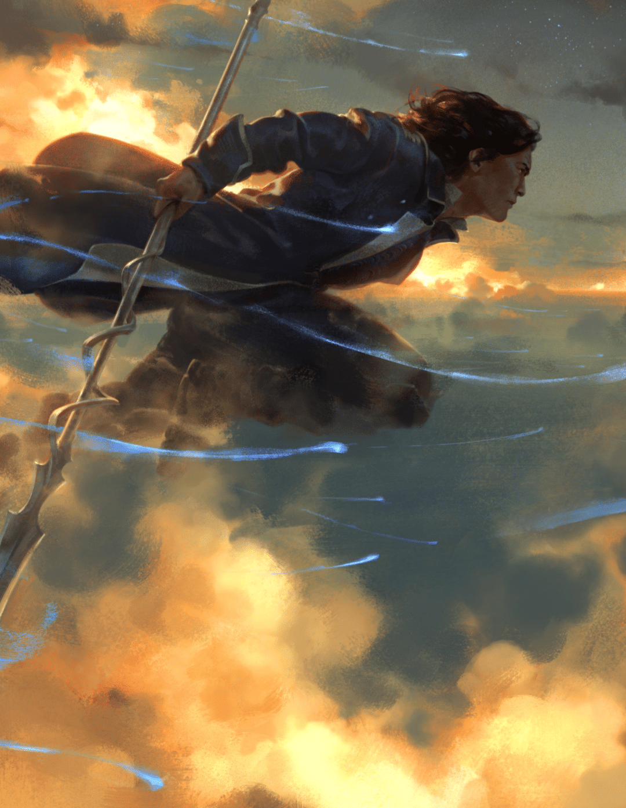
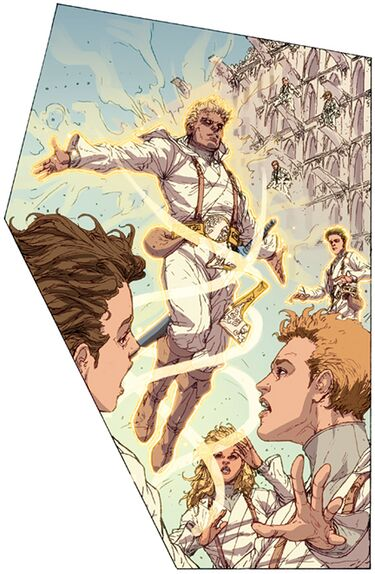

Whether it's drawing runes in the air or altering the laws of reality, the cosmere has something for everyone!

Metalic Arts
Alomancy:
Alomancers consume metals and depending on the alomancer and the type
of metal they are granted powers including increaced sences and strength,
push or pull on metal, or enflame or dampen emotions of others.
Feruchemy:
Feruchemist are able to store different atributes such as
strength, speed, wakefullness, and memories in different types
of metal and withdraw them at will.
Hemalurgy:
By peircing an alomancer or feruchemist through the heart with a
sharp peice of metal and them placing that peice of metal in someone
else can grant a slightly weaker version of that power.

Surgebinding
Radiants and fused are granted the ability to bend the laws of nature
such as gravity, light and sound, atomic bonds, instantanious travel, and
chemical trasmutation.
Awakening
By collecting breaths, extra magic that each person is born with, awakeners can
grant some of these breaths to an object and give it a command. The object
gains a small level of sentience and does the best it can to accomplish what it
was commanded to do.

Sand Mastery
Sand Masters can use the water inside of their bodies to control white sand and
anc create tendrils they can use for a large viriety of functions.
AonDor
Elantrians tap into the power of the AonDor through runes and symbols they draw
in the air. This allows them to cast "spells."